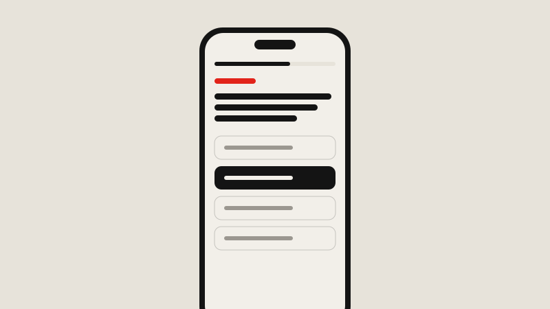
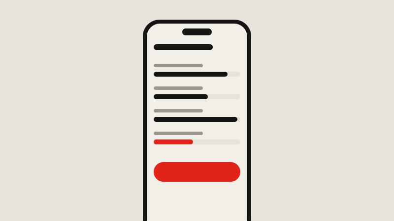
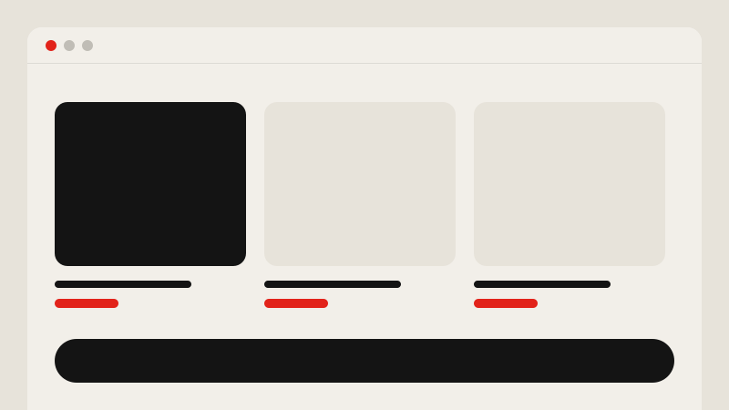

Libro Educação
Maratona ENEM
Uma experiência de preparação para o ENEM que ajuda o estudante a manter o ritmo e entender onde precisa melhorar.

Contexto
A preparação para o ENEM dura meses e acontece, na maior parte do tempo, no celular. O estudante precisa resolver muitas questões, entender o próprio desempenho e não desistir no meio do caminho.
O desafio
Fazer conteúdo denso caber bem numa tela pequena e transformar o desempenho em algo que o estudante entende e usa para decidir o que estudar.
Processo
Entender o estudante
Conversas e pesquisas com estudantes para entender rotina, dificuldades e o que faz alguém abandonar a preparação.
Fluxo de estudo
Desenhei o caminho entre questões, simulados e revisão, deixando claro o próximo passo em cada momento.
Mobile primeiro
Interface pensada para o celular, com leitura confortável de enunciados longos e respostas rápidas.
Testes
Testes de usabilidade com estudantes para ajustar os pontos de atrito antes de escalar.
Solução
O estudante encontra questões e simulados num fluxo contínuo, recebe retorno imediato e acompanha a evolução por área de conhecimento, o que ajuda a escolher onde focar.



Resultados
- Fluxo de estudo mais claro do começo ao fim
- Desempenho apresentado de um jeito que orienta a próxima ação
- Ajustes validados com estudantes antes de escalar
Aprendizados
Para quem está estudando, feedback rápido vale mais do que muita funcionalidade. Cada clique a menos entre o estudante e a próxima questão fez diferença.